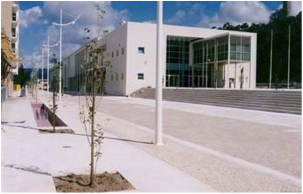
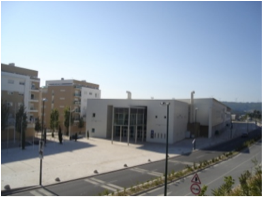
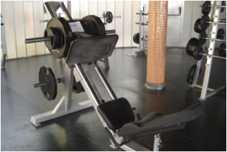
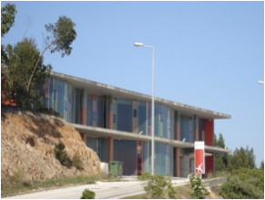
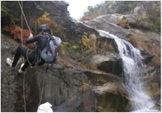
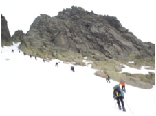
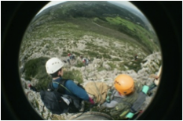

Situada, provisoriamente, no 1º piso do Pavilhão Multiusos de Rio Maior, a Escola Superior de Desporto de
Rio Maior, utiliza este edifício, principalmente, para as suas actividades administrativas, de ensino, investigação,
biblioteca, reprografia e outros serviços de suporte à actividade académica.

As actividades de ensino, de componente prática, são realizadas no excelente complexo desportivo de Rio Maior, gerido pela
Desmor.
Especificamente para as actividades relacionadas com a condição física as aulas práticas são proporcionadas no Ginásio Boa Forma, que, por ser um ginásio recente,
dispor dos principais equipamentos que os alunos podem encontrar em qualquer ginásio, proporcionar um contexto de formação idêntico ao do mercado de trabalho, se
torna num excelente espaço de formação.


As actividades de desporto na natureza são realizadas em diferentes espaços naturais, no país e no
estrangeiro. Predominantemente, a Lagoa de Óbidos, a praia da Foz do Arelho, as Serras de Aire e
Candeeiros, da Estrela, da Lousã, os Picos da Europa, entre outros.



Na área científica de Ciências do Desporto, a ESDRM desenvolve as seguintes subáreas científicas:
- Actividade física e saúde;
- Análise do movimento e controlo motor;
- Desporto e recreação;
- xFisiologia do exercício;
- Gestão do desporto;
- Optimização do rendimento desportivo;
- Pedagogia do desporto;
- Psicologia do desporto.
A ESDRM tem em funcionamento as seguintes unidades de apoio aos alunos:
- Laboratório de Investigação em Desporto;
- Gabinete de Apoio à Inserção no Mercado de Trabalho do Desporto – Observatório Profissional;
- Gabinete de Avaliação da Qualidade;
- Gabinete de Empreendedores e Inovação no Desporto;
- Gabinete de Mobilidade Internacional;
- Gabinete de Apoio Psicológico.
No âmbito da Investigação e Desenvolvimento existem protocolos e projectos de investigação, a nível internacional, com as seguintes escolas:
| INSTITUIÇÃO |
UNIVERSIDADE |
PAÍS |
SITE |
| Akademia Wychowania Fizycznego |
University School of Physical Education |
Polónia |
www.awf.wroc.pl |
| Faculty of exercise and sport sciences |
University of Tartu |
Estónia |
www.ut.ee |
| Facultad de Ciencias del Deporte de Cáceres |
Universidad de Extremadura |
Espanha |
www.unex.es |
| Facultad de Ciencias del Deporte |
Universidad de Murcia |
Espanha |
www.um.es |
| STAPS |
Université de Paris 12 |
França |
www.univ-paris12.fr |
| Deutsche Sporthochschule Köln |
Koln University |
Alemanha |
www.uni-koeln.de |
| Facultad de ciencias de la educación y del deporte |
Universidad Católica de Valencia |
Espanha |
www.ucv.es |
| INEF |
Universidad de La Coruña |
Espanha |
www.udc.es |
| Institut Für Sportwissenschalft |
Universität Koblenz – Landau |
Alemanha |
www.uni-koblenz-landau.de |
| INEF Lleida |
Universidad da Catalunya |
Espanha |
www.udl.es |
| STAPS |
Université de Nantes |
França |
www.univ-nantes.fr |
| Faculty of Physical Education and Sport Sciences |
Semmelweis University |
Hungria |
www.sote.hu |
| Istituto Universitario di Scienze Motorie |
|
Itália |
www.iusm.it |
| Universidade Valahia de Targoviste |
Universidade Valahia de Targoviste |
Roménia |
www.valahia.ro |
| Universidade de Alicante |
Universidade de Alicante |
Espanha |
www.ua.es |
| Faculty of Physical Education and Sport Sciences |
Universidade de Atenas |
Grécia |
www.phed.uoa.gr |
Na cooperação internacional, na realização de projectos e na afiliação a organizações internacionais
destaca-se as seguintes instituições:
- International Council of Sport Science and Physical Education;
- European Network of Sport Science, Education and Employment;
- Aligning European Higher Education Structure in Sport Science;
- European Observatoire of Sport and Employment;
- European Health and Fitness Association.
Ainda no âmbito da mobilidade internacional, a ESDRM promove o programa SOCRATES/ ERASMUS no
intercâmbio de alunos e de professores.
Recentemente a ESDRM tornou-se membro do CENTRO DE INVESTIGAÇÃO EM DESPORTO E SAÚDE E DESENVOLVIMENTO HUMANO,
abreviadamente designado por CIDESD, unidade supra-institucional, técnico-científica de investigação
fundamental e aplicada, de natureza multidisciplinar constituído pela integração em rede dos Núcleos
de Investigação (NI) do Instituto Politécnico de Bragança (IPB) do Instituto Politécnico de Viseu (IPV)
da Escola Superior de Desporto de Rio Maior, (ESDRM); da Universidade da Beira Interior (UBI) do
Instituto Superior da Maia (ISMAI – Centro de Investigação em Desporto e Actividade Física - CIDAF) e
da Universidade de Trás-os-Montes e Alto Douro (UTAD – Centro de Investigação em
Desenvolvimento Tecnológico em Desporto e Saúde - CIDETEDES).